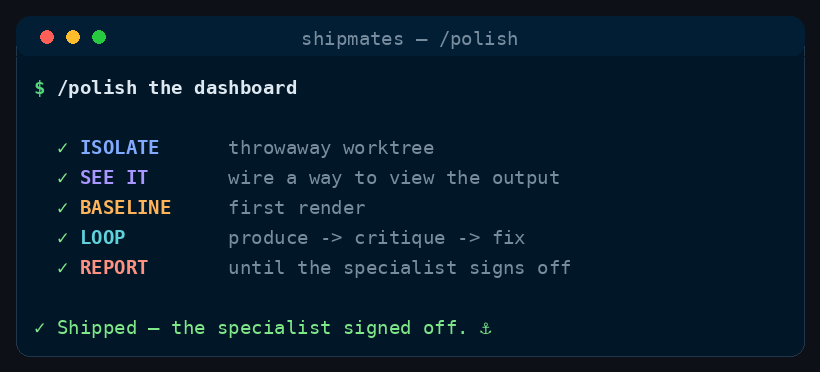

Command
/polish
iterate to a specialist's sign-off
Show the artifact, take critique, fix, repeat until a specialist signs off.
See it run

/polish runs, in order.How to run it
Run it in your harness
/polish <what to polish — a screen, an asset, a rendered surface> [reviewer: art-director|ux-ui-designer|product-manager]<angle brackets> = required · [square brackets] = optional
How it works
One reviewer sits, chosen by the artifact: designer for UI, art-director for pictures judged as art, product-manager for other output. An engineer applies each round of fixes.
See it
Put the real output in front of the reviewer — not the source that made it.
Crew
Baseline
Capture round zero so later rounds have something to diff against.
No spawn — produce the first version.
Loop
Critique, fix, recapture. One reviewer by domain; the engineer applies that reviewer's list. Bounded rounds.
Always
Also sit when
ux-ui-designerthe artifact is on-screen UIart-directorthe artifact is rendered artproduct-managerthe artifact is other output — copy, a chart, a data view
Sign-off
Stop when that specialist accepts — not when the round cap is merely tiring.
No extra spawn — report their verdict.
When to use
- A screen, chart, or render needs to look right — behaviour already exists.
- Prose docs? /document. New feature? /ship-issue.
The skill
The installer ships the full skill — stages, gates, config — from commands/polish.md.